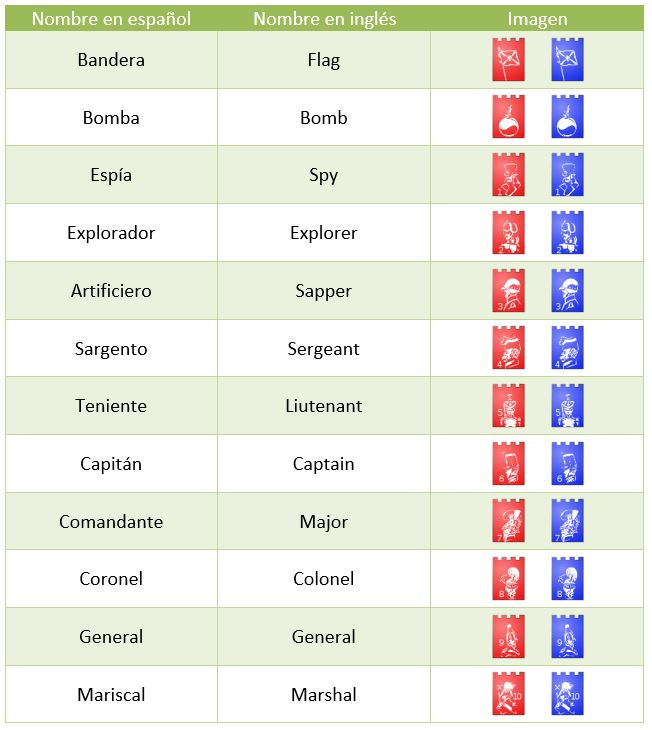
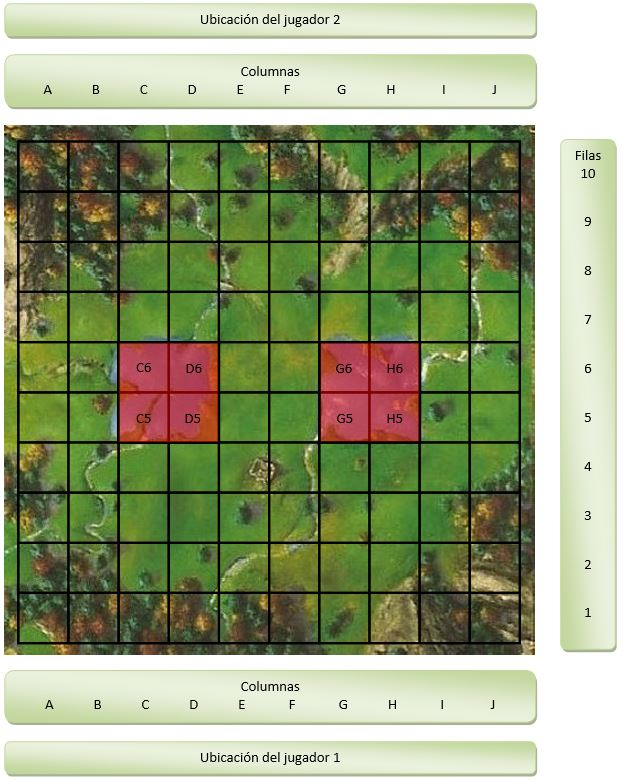

Stratego¶

Presentación¶
Definición¶
Stratego es un juego de estrategia por turnos, en el que cada jugador dispone de un ejército con el que debe tratar de conseguir alguno de los objetivos definidos por las reglas del juego, realizando movimientos que igualmente están regidos por las reglas del juego.
Reglas del juego¶
Existen unas reglas estándar y algunas variaciones. En este documento solamente se tratarán las reglas estándar, pero se detallan algunas variaciones por si se decidiese implementarlas en un futuro.
Variaciones¶
Tablero¶
Con más de dos jugadores.
Con un tamaño distinto al estándar.
Con una forma distinta al estándar.
Con casillas hexagonales u otras formas distintas a la estándar.
Con orografía, de forma que algunas casillas tengan una altitud superior al resto, a modo de montes o colinas, provocando que las fichas situadas en esas casillas aumenten su rango mientras mantengan esa posición.
Ejército¶
- Con 40 piezas u otro número de piezas:
32 piezas, retirando un capitán, un teniente, un sargento, un minero, tres exploradores y una bomba.
8 piezas (combinación llamada “barrage”) con el mariscal, el general, un minero, dos exploradores, el espía, una bomba y la bandera.
Combates¶
Combate a ciegas: no se ven los rangos de las fichas contrarias que entran en combate, de forma que si la ficha contraria es superior a la nuestra seguirá en el tablero y no sabremos qué rango tiene.
Capturas ocultas: no se ven los rangos de las fichas capturadas.
Factor sorpresa: a igualdad de rango vence el atacante.
Rescates¶
Rescate por alcanzar la retaguardia enemiga.
Rescate por puntos obtenidos por las capturas.
Características de las piezas¶
Explorador limitado: no puede saltar varias casillas y atacar a la vez.
Granadas: las bombas pueden moverse con movimiento de oficial y son de un solo uso.
Espía con licencia para capturar: vence a todas las demás piezas, pero sigue siendo vulnerable a todas.
Pieza ágil: algunas o todas las piezas tienen el desplazamiento de explorador, o pueden moverse dos casillas, o en diagonal.
Bandera móvil: con movimiento de oficial.
Aumento de rango por factor sorpresa: el atacante aumenta su graduación un rango.
Artificiero por captura: algunas o todas las piezas (salvo los exploradores) adquieren la capacidad de desactivar bombas si previamente han capturado a un artificiero.
- Ascenso por valía: cualquier ficha (salvo el mariscal) puede aumentar un rango después de capturar a una contraria, siempre que anteriormente haya sido capturada al menos una compañera del rango a ocupar. Opciones:
Se asciende de rango solo si la ficha capturada es de rango inmediatamente inferior.
No todas las fichas pueden aumentar de rango.
- Ascenso por coraje: cualquier ficha (salvo el mariscal) puede aumentar un rango al llegar a la línea de fondo, siempre que anteriormente haya sido capturada al menos una compañera del rango a ocupar. Opciones:
No todas las fichas pueden aumentar de rango.
Movimiento general de las piezas¶
A la carga: se puede avanzar y desplazarse lateralmente, pero no se puede retroceder.
A la carga con ataque envolvente: mismas reglas que “A la carga” pero se puede retroceder solo si es para atacar a una ficha contraria que se encuentre en la fila inmediatamente anterior.
Campo a través: movimiento en diagonal para algunas o para todas las fichas.
Relevo: “enrocar” dos fichas contiguas, siempre que ninguna de ellas sea una bomba ni la bandera (a menos que se esté jugando con la variación “Granadas” o “Bandera móvil”). El jugador que realice un relevo pierde un turno ya que el relevo son 2 movimientos a la vez.
Marines: algunas piezas saben nadar y por tanto pueden cruzar los lagos.
Deserciones: una ficha puede desertar si va a ser atacada, no teniendo por qué revelar el rango de la pieza desertora.
Reglas estándar¶
Jugadores¶
Únicamente puede haber dos jugadores. Aquel que crea la partida es el jugador 1, y el oponente que acepte las condiciones y se incorpore a la partida será el jugador 2.
Bando¶
Existen dos bandos posibles, rojo y azul. El primer movimiento siempre será del bando rojo. El jugador 1 puede elegir si desea comenzar con piezas rojas, y por tanto realizar el primer movimiento, o con piezas azules y cederle el primer movimiento al oponente.
Tipos de piezas¶
Existen 12 tipos de piezas:
Movimiento de las piezas¶
Las banderas y las bombas no se pueden mover. Los exploradores se pueden mover en vertical y en horizontal, tantas casillas como se quiera, pero sin poder saltar por encima de ninguna otra pieza. El resto de piezas se pueden mover en vertical y en horizontal, una sola casilla por turno. 2.5. Rangos de las piezas. El rango de cada pieza, que va reflejado en la imagen de cada pieza, determina a quién puede capturar.
Rango |
Tipo de pieza |
|---|---|
() |
Bandera |
() |
Bomba |
1 |
Espía |
2 |
Explorador |
3 |
Artificiero |
4 |
Sargento |
5 |
Teniente |
6 |
Capitán |
7 |
Comandante |
8 |
Coronel |
9 |
General |
10 |
Mariscal |
En caso de combate:
A igualdad de rango, ambas piezas se eliminan mutuamente.
- A diferencia de rango, toda pieza de rango superior captura a toda pieza de rango inferior, con tres matizaciones:
Cualquier pieza puede capturar la bandera.
Todas las piezas son eliminadas al encontrarse una bomba, salvo el artificiero.
El espía puede capturar al mariscal si es el espía el que realiza el movimiento de ataque.
Ejércitos¶
Cada jugador dispone de un ejército de 40 piezas, compuesto por:
Tipo de pieza |
Número de piezas |
|---|---|
Bandera |
1 |
Bomba |
6 |
Espía |
1 |
Explorador |
8 |
Artificiero |
5 |
Sargento |
4 |
Teniente |
4 |
Capitán |
4 |
Comandante |
3 |
Coronel |
2 |
General |
1 |
Mariscal |
1 |
Objetivo del juego¶
El objetivo del juego es capturar la bandera del oponente o bien capturar todas sus piezas móviles.
Tablero¶
El tablero es cuadrado, con 10 filas y 10 columnas, teniendo por tanto 100 casillas, de las cuales 92 son practicables para el juego y 8 de ellas (que se detallarán más adelante) no son jugables. Los jugadores se colocan uno enfrente del otro. Las columnas se nombran A, B, C, D, E, F, G, H, I y J, de izquierda a derecha desde el punto de vista del jugador 1, por tanto, la columna A es la que está a la izquierda del todo para el jugador 1 y a la derecha del todo para el jugador 2. Las filas se nombran 1, 2, 3, 4, 5, 6, 7, 8, 9 y 10, de abajo a arriba desde el punto de vista del jugador 1, por tanto, la fila 1 es la más cercana al jugador 1 y la más lejana del jugador 2. Las 8 casillas no practicables para el juego son: C5, D5, G5, H5, C6, D6, G6 y H6. Ejemplo de tablero, con las casillas no practicables señaladas en rojo:
Preparación del juego¶
Las piezas se colocan en las cuatro filas más próximas a cada jugador, una en cada casilla, con el dorso de las mismas hacia el oponente, que no podrá ver a qué rango corresponde cada una. Cada pieza puede colocarse en cualquiera de las 40 casillas iniciales, con una sola excepción, no pueden colocarse 6 piezas inmóviles en las únicas 6 casillas desde las cuales se puede realizar el primer movimiento, ya que esto le impediría al jugador realizar un movimiento en su primer turno.
Turnos¶
Cada jugador, en cada uno de sus turnos, podrá mover una de sus piezas a una de las casillas jugables, atendiendo a la movilidad del rango de la pieza que desee mover, y colocarla en una casilla libre o bien en una casilla ocupada por una pieza contraria, es decir, atacar a una pieza. Las piezas sólo pueden moverse entre dos casillas concretas un máximo de 3 veces. No es obligatorio atacar.